La accesibilidad es un derecho humano y, en el contexto del software, constituye un atributo de calidad esencial. En este codelab aprenderá a realizar auditorías automatizadas para identificar problemas de accesibilidad, teniendo en cuenta las Pautas de Accesibilidad para el Contenido Web (WCAG), tanto en entornos web como móviles. Asimismo, comprenderá por qué estos problemas son relevantes y aprenderá a interpretarlos y corregirlos.
¿Qué aprenderá?
Al completar este codelab, usted será capaz de:
- Comprender el propósito y la estructura de WCAG 2.2 (Web Content Accessibility Guidelines).
- Entender por qué la accesibilidad es crítica desde perspectivas técnicas, éticas y legales.
- Realizar auditorías de accesibilidad web utilizando Lighthouse.
- Realizar auditorías de accesibilidad móvil utilizando Android Accessibility Scanner.
- Identificar antipatrones comunes de accesibilidad.
¿Qué necesita?
- Google Chrome
- Node.js (versión 18 o superior)
- Un proyecto web existente (cualquier sitio web)
- Un teléfono o un emulador de Android
- Conocimientos básicos de HTML/CSS y de interfaces de usuario en Android
Al diseñar y desarrollar software accesible, nos aseguramos de que cualquier usuario, independientemente de sus limitaciones físicas, motoras o visuales, pueda percibir, comprender, navegar e interactuar con el producto.
Esto beneficia a todas las personas involucradas, no únicamente a quienes presentan discapacidades permanentes. En la actualidad, se habla de la discapacidad como un espectro más que como una condición fija. Existen discapacidades permanentes, temporales y situacionales. Considere los siguientes ejemplos.

Imagen 1: Espectro de la discapacidad. Inspirado en el espectro de discapacidad de Microsoft.
Existen múltiples situaciones en la experiencia humana en las que cualquier persona puede encontrarse en condición de discapacidad. Por ello, desarrollar una aplicación accesible permite que todas las personas interactúen con ella, independientemente de su contexto. Desde la perspectiva del desarrollo, la accesibilidad también contribuye a mejorar la calidad del código, la usabilidad, el posicionamiento SEO, la mantenibilidad y, finalmente, el cumplimiento normativo y legal.
Shift-left

Imagen 2: Modelo de pruebas shift-left. Adaptado de un foro de PayPal.
El concepto de Shift Left hace referencia a un enfoque preventivo que busca integrar la accesibilidad desde las etapas iniciales del diseño y desarrollo, en lugar de abordarla al final del proceso. Tradicionalmente, este requisito se atiende en fases tardías, lo que puede generar retrasos e incrementar los costos. Al "desplazar hacia la izquierda" la inclusión de la accesibilidad, garantizamos que todos los aspectos del producto o servicio sean accesibles desde su concepción, reduciendo problemas y maximizando la eficiencia.
WCAG 2.2
Las WCAG (Web Content Accessibility Guidelines) constituyen el estándar internacional en materia de accesibilidad. Aunque fueron concebidas principalmente para entornos web, sus principios son aplicables a otros contextos, como el móvil, lo que las hace independientes de tecnologías o frameworks específicos. Su versión más reciente es la 2.2.
Las pautas se fundamentan en cuatro principios pilares:
Principio | Significado |
Perceptible | La información y los elementos deben presentarse de manera que los usuarios puedan percibirlos. |
Operable | Los usuarios deben poder interactuar con la interfaz. |
Comprensible | El contenido y la interfaz deben ser claros y entendibles. |
Robusto | El contenido debe ser compatible con tecnologías de asistencia. |
Barreras comunes de accesibilidad
A continuación se presentan algunos ejemplos frecuentes de problemas que surgen cuando no se tiene en cuenta la accesibilidad. El W3C proporciona criterios de éxito que explican por qué cada problema es relevante y cómo abordarlo.
Bajo contraste de color
Un contraste insuficiente dificulta la percepción del texto y de elementos visuales esenciales para personas con baja visión o en entornos muy iluminados. WCAG exige un contraste mínimo de 4.5:1 para texto normal, 3:1 para texto grande, y ≥ 3:1 para componentes de interfaz y estados no textuales.
Perceptible, Pauta 1.4 Distinguible — Criterios 1.4.3 Contraste (mínimo) y 1.4.11 Contraste no textual.

Imagen 3: Texto blanco sobre diferentes fondos para evaluar contraste. Adaptado de 10 Pound Gorilla
Falta de texto alternativo
Los usuarios de lectores de pantalla requieren alternativas textuales significativas para comprender imágenes, íconos y otro contenido no textual. Las imágenes decorativas deben ocultarse de las tecnologías de asistencia.
Perceptible, Pauta 1.1 Alternativas textuales — Criterio 1.1.1 Contenido no textual.
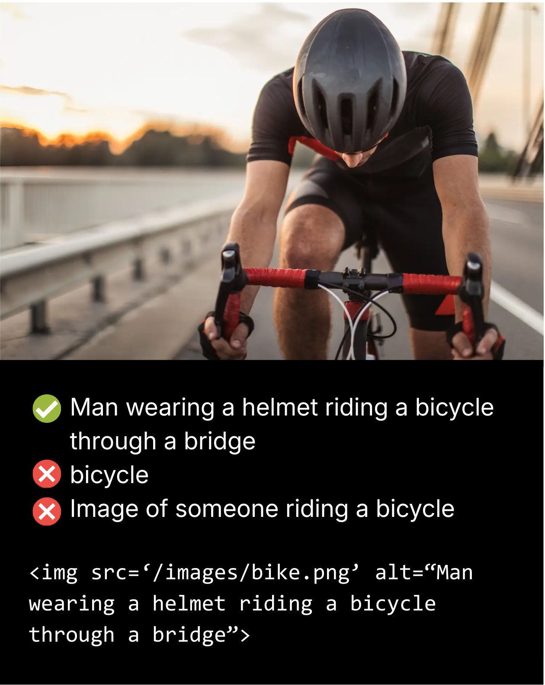
Imagen 4: Buenas y malas prácticas en texto alternativo. Adaptado de Reliablesoft.
Elementos interactivos sin nombres accesibles
Las tecnologías de asistencia dependen del nombre, rol y estado o valor de un control. Botones o enlaces sin etiquetas, o componentes personalizados que no expongan esta información, dificultan la comprensión y la operación.
Robusto, Pauta 4.1 Compatible — Criterio 4.1.2 Nombre, rol, valor.

Imagen 5: Interacción esperada con lector de pantalla. Adaptado de AAArdvark
Navegación deficiente mediante teclado
Muchas personas navegan exclusivamente mediante teclado. Toda la funcionalidad debe ser operable por este medio, con un orden lógico del foco y un indicador visible del mismo.
Operable, Pauta 2.1 Accesible por teclado — Criterio 2.1.1 Teclado. Pauta 2.4 Navegable — Criterios 2.4.3 Orden del foco y 2.4.7 Foco visible.
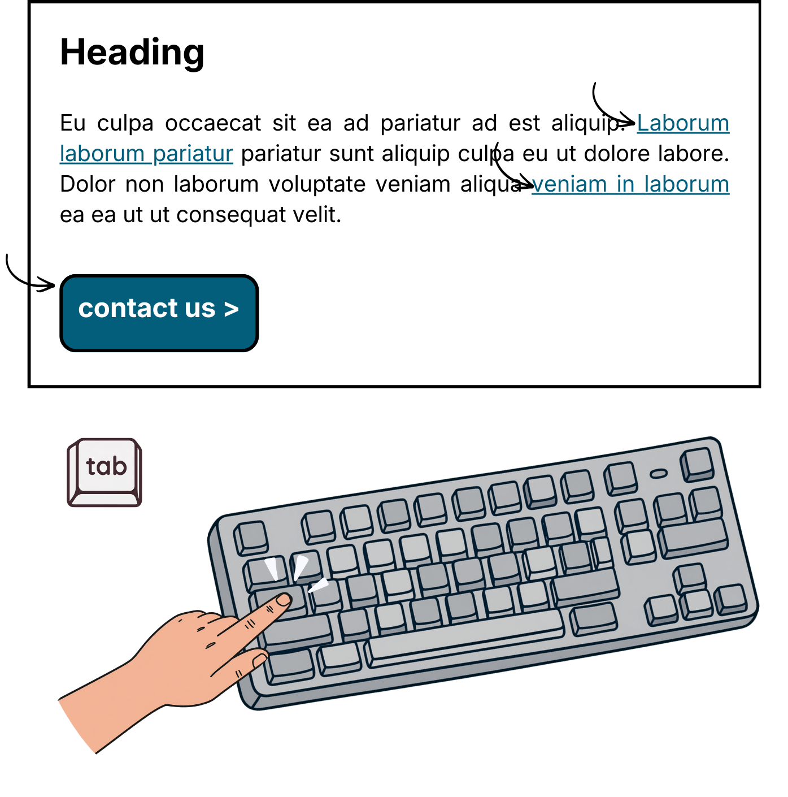
Imagen 6: Ejemplo de navegación por teclado. Adaptado de AAArdvark
Objetivos táctiles demasiado pequeños
Objetivos pequeños o muy próximos incrementan los errores de pulsación, especialmente en personas con destreza limitada o en dispositivos móviles. WCAG 2.2 exige objetivos de al menos 24×24 px CSS para punteros y 44×44 px CSS para interacción táctil, o un área equivalente.
Operable, Pauta 2.5 Modalidades de entrada — Criterio 2.5.8 Tamaño del objetivo (mínimo).

Imagen 7: Objetivos según modalidad de entrada. Adaptado de Medium
Contenido dinámico no anunciado a lectores de pantalla
Cambios de estado como mensajes de éxito, error o carga deben comunicarse a las tecnologías de asistencia, incluso si el foco no se desplaza. De lo contrario, los usuarios pierden retroalimentación crítica.
Robusto, Pauta 4.1 Compatible — Criterio 4.1.3 Mensajes de estado.

Imagen 8: Estado de carga sin anuncio en el lector de pantalla.
¿Qué es Lighthouse?
Lighthouse es una herramienta de auditoría automatizada integrada en Chrome DevTools que evalúa rendimiento, buenas prácticas, SEO y accesibilidad.
Ejecución de una auditoría simple
Ejecutaremos una auditoría de accesibilidad sobre un sitio web. Para este ejemplo, utilizaremos Wikipedia.
- Abra el sitio en Google Chrome.
- Abra las herramientas de desarrollo presionando F12.
- Diríjase a la pestaña Lighthouse.

Imagen 9: Pestaña Lighthouse.
Lighthouse ofrece tres modos:
- Navigation: analiza una carga de página.
- Timespan: analiza un periodo con interacciones (no genera categoría de accesibilidad).
- Snapshot: analiza el estado actual de la página.
La función de Timespan no produce un output para accesibilidad. Puede seleccionar el dispositivo, lo cual cambiará el tamaño del viewport y el agente de usuario. También hay varias categorías dentro del informe, por ahora solo nos interesa accesibilidad, pero puede intentar las demás.
- Para este codelab utilizaremos Navigation, en escritorio, y seleccionaremos únicamente la categoría de Accesibilidad. Tras unos segundos, se generará el informe.
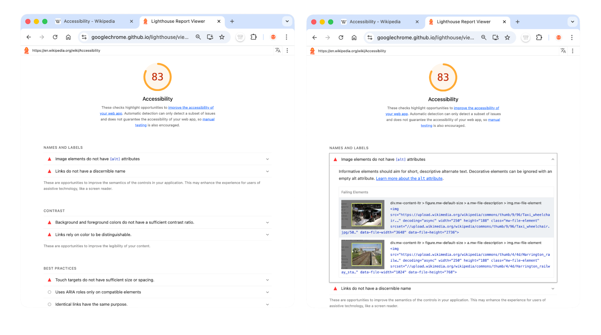
Imagen 10: Resultado de auditoría Lighthouse.
El informe incluirá una serie de recomendaciones. Cada recomendación es interactiva (clicable) y señala con precisión en qué parte del sitio web se encuentra el error y por qué resulta relevante. Lighthouse primero identifica los elementos problemáticos, representados con un triángulo rojo (🔺); posteriormente, los elementos que requieren verificación manual, indicados con un círculo negro (○); y finalmente, los elementos que superan la auditoría y cumplen adecuadamente con los criterios de accesibilidad, representados con un cuadrado verde (🟩).
Por ejemplo, analicemos la primera recomendación. Esta indica que existen dos imágenes en el sitio web que no ofrecen texto alternativo (alt text). Este es uno de los principios fundamentales de las WCAG. En la pauta 1.1 se establece que todo contenido no textual debe proporcionar alternativas textuales, de modo que pueda transformarse en otras formas que las personas necesiten, como texto ampliado, braille, voz, símbolos o lenguaje más simple.
No obstante, también es importante observar aquello que Wikipedia implementa correctamente. ARIA, sigla de Accessible Rich Internet Applications, corresponde a un conjunto de semánticas que permiten a quien desarrolla transmitir adecuadamente información a las tecnologías de asistencia desde el código, particularmente en archivos HTML y SVG. Una etiqueta ARIA, por ejemplo, constituye un mecanismo para rotular un objeto de acuerdo con su función, y no con su forma visual. Un ejemplo de una etiqueta ARIA correctamente implementada se muestra a continuación.
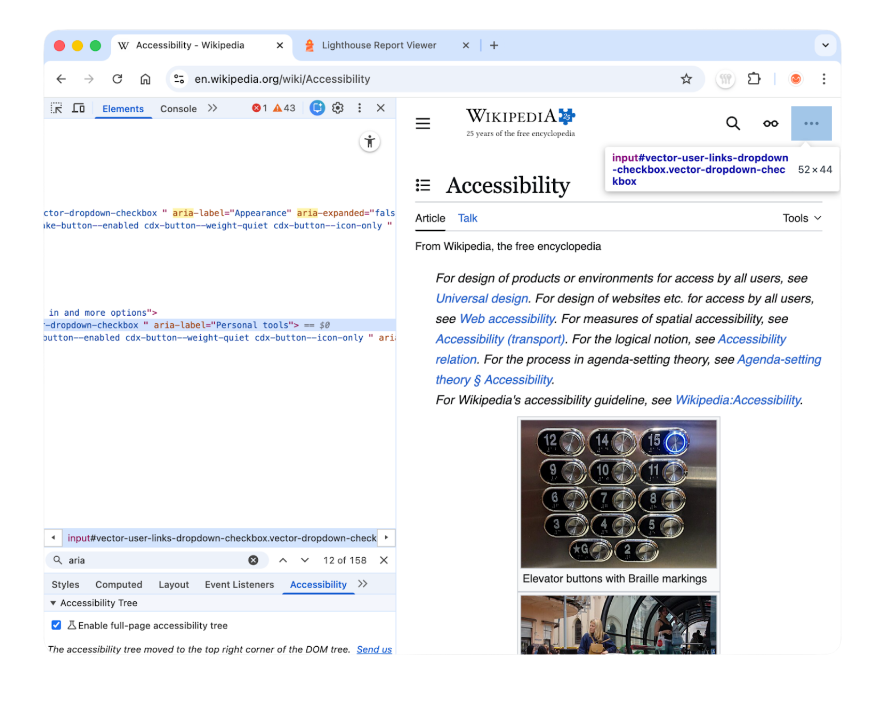
Imagen 11: Etiquetado ARIA correcto
El ícono mostrado está compuesto por tres puntos. Sin embargo, en Wikipedia este botón cumple la función de mostrar opciones del usuario, tales como iniciar sesión, crear una cuenta o realizar una donación. La etiqueta ARIA describe de manera adecuada la función del elemento: en lugar de indicar simplemente "tres puntos", utiliza la etiqueta "Herramientas personales", evitando así confusión sobre la funcionalidad real del botón. Todo esto es igualmente señalado dentro del informe de Lighthouse.
Ejecución de un flujo de usuario simple utilizando la API de Lighthouse
Lighthouse proporciona una API de flujos de usuario (User Flows API, disponible desde la versión 10 en adelante) que permite medir accesibilidad y rendimiento durante interacciones reales, tales como navegación, periodos de tiempo (timespan) y capturas de estado (snapshot). Este enfoque posibilita la detección de problemas no solo durante la carga inicial de la página, sino también durante el desplazamiento, la búsqueda, las actualizaciones dinámicas de la interfaz y otros eventos.
En primer lugar, crearemos un nuevo directorio para nuestro proyecto. Dentro de dicho directorio, ejecutamos:
npm init -y
npm install Lighthouse puppeteer
Posteriormente, creamos un nuevo archivo que contendrá la lógica de nuestro script, al cual denominamos flow.js. En primer lugar, importamos los módulos de Node que acabamos de instalar:
import fs from 'fs';
import puppeteer from 'puppeteer';
import {startFlow} from 'Lighthouse';Ejecutaremos el flujo de usuario simulado utilizando el mismo ejemplo anterior. Para ello, definimos el sitio web que deseamos visitar y una función auxiliar sleep, la cual resulta útil para permitir que el navegador cargue correctamente el contenido.
const BASE_URL = 'https://www.wikipedia.org';
const sleep = ms => new Promise(resolve => setTimeout(resolve, ms));Dentro de una función principal, que denominaremos run(), definimos la simulación. En este punto creamos una instancia del navegador de Puppeteer, una instancia de página y una instancia de flujo. Esta última corresponde al método de la API de Lighthouse que inicia la auditoría. Definimos el navegador con la opción headless: false, dado que deseamos observar la automatización en tiempo real.
async function run() {
const browser = await puppeteer.launch({
headless: false,
defaultViewport: null,
args: ["--start-maximized"],
});
const pages = await browser.pages();
const page = pages[0] ?? (await browser.newPage());
page.setDefaultTimeout(15000);
const flow = await startFlow(page, {
name: "Wikipedia Audit Example",
});
}A continuación, definimos cada uno de los pasos de la simulación, los cuales serán los siguientes:
- Abrir el sitio web
- Ubicar el campo de búsqueda e ingresar el texto "Hello world program"
- Desplazarse hacia abajo en la página
En primer lugar, accedemos al sitio y realizamos una captura de estado (snapshot). Cada vez que se ejecuta una acción, se recomienda tomar una captura, con el fin de analizar la auditoría en ese punto específico del tiempo.
await page.goto(BASE_URL, { waitUntil: "networkidle0" });
await flow.snapshot({ stepName: "Page loaded" });En segundo lugar, realizamos la búsqueda. Este es el procedimiento estándar en Puppeteer para esperar a que los resultados se carguen. Para flujos más complejos, se recomienda consultar la documentación oficial de Puppeteer.
await page.waitForSelector("#searchInput");
await page.click("#searchInput");
await page.keyboard.type("Hello world program", { delay: 40 });
await flow.snapshot({ stepName: "Typed query" });
await Promise.all([
page.waitForNavigation({ waitUntil: "networkidle2" }),
page.keyboard.press("Enter"),
]);
await flow.snapshot({ stepName: "Search results or article loaded" });En tercer lugar, nos desplazamos por el contenido y tomamos nuevas capturas de estado.
await page.evaluate(() => {
window.scrollBy(0, Math.floor(window.innerHeight * 1.5));
});
await sleep(800);
await page.evaluate(() => {
window.scrollBy(0, Math.floor(window.innerHeight * 1.5));
});
await sleep(800);
await flow.snapshot({ stepName: "Scrolled page" });Finalmente, generamos el informe en formato HTML para su posterior análisis y cerramos el navegador.
const reportHtml = await flow.generateReport();
fs.writeFileSync("flow.report.html", reportHtml);
await browser.close();Para ejecutar la función principal, incluimos el siguiente fragmento al final del archivo:
run().catch((e) => {
console.error(e);
process.exit(1);
});Para ejecutar este script, utilizamos el comando node flow.js. El proceso se visualizará en pantalla y el informe generado será muy similar al obtenido anteriormente. Sin embargo, en este caso contamos con la ventaja de poder controlar Lighthouse de manera programática, lo cual resulta especialmente útil en procesos de aseguramiento de calidad (QA testing).
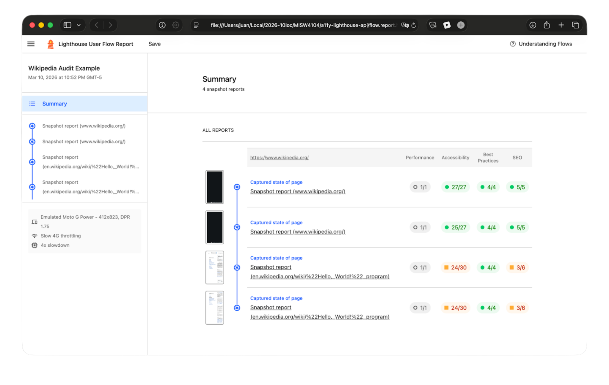
Imagen 12: Resultado de auditoría de flujo con Lighthouse
La accesibilidad en dispositivos móviles sigue los mismos principios establecidos por las WCAG, pero introduce consideraciones adicionales relacionadas con la interacción táctil y los gestos. En este contexto, suelen ser especialmente relevantes el tamaño de los objetivos táctiles, las descripciones de contenido, el orden del foco (para compatibilidad con teclado) y la interacción con lectores de pantalla.
¿Qué es Android Accessibility Scanner?
Android Accessibility Scanner es una herramienta que analiza pantallas de aplicaciones y sugiere mejoras de accesibilidad. Evalúa aspectos como la ausencia de descripciones de contenido, objetivos táctiles demasiado pequeños, bajo contraste y controles sin etiquetar.
Ejecución de una auditoría simple
Realizaremos una auditoría de accesibilidad sobre una aplicación. Para este ejemplo, utilizaremos nuevamente Wikipedia.
En su ambiente Android:
- Descargue Android Accessibility Scanner de la Play Store.
- Abra la aplicación. Una vez configurada, aparecerá permanentemente en pantalla un botón azul cuadrado con un ícono de verificación; este será el punto de acceso a todas las funcionalidades del escáner.

Imagen 13: Herramientas de Accessibility Scanner
- Una vez dentro de la aplicación que desea analizar, seleccione las opciones de escaneo. Accessibility Scanner permite grabar un flujo de usuario o enviar una instantánea del estado actual de la aplicación. Para comenzar, analizaremos una instantánea.
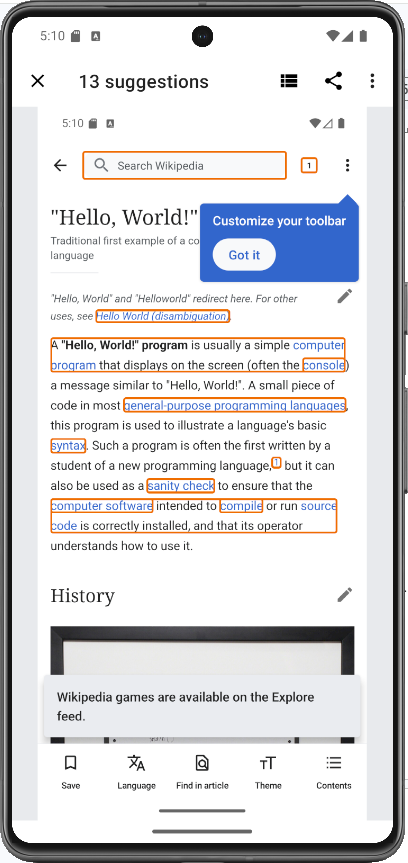
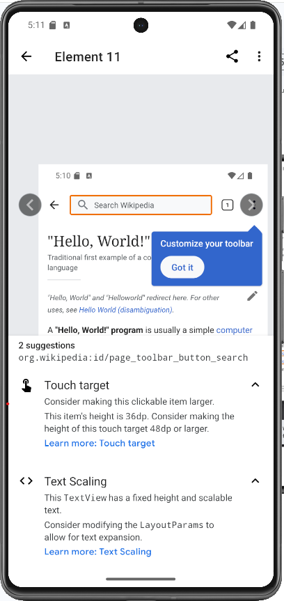
Imagen 14: Resultado de Accessibility Scanner
Como puede observarse, el escáner muestra y resalta todos los elementos problemáticos de la aplicación. Al tocar cada uno de ellos, es posible comprender por qué presentan inconvenientes y cómo podrían corregirse, por ejemplo, en términos del tamaño de los objetivos táctiles según las WCAG. Este modo no proporciona una puntuación global como Lighthouse, pero los resultados pueden compartirse.
- Al analizar el modo de grabación, la auditoría funciona de manera similar a la instantánea, con la diferencia de que incluye todas las pantallas visitadas mientras la grabación está activa.
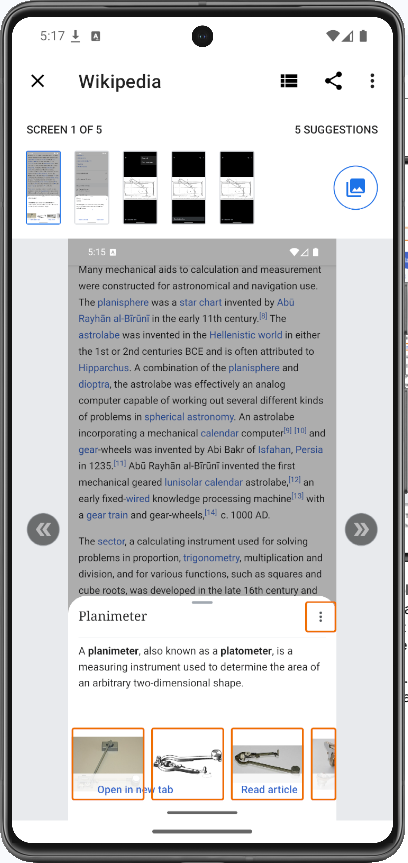
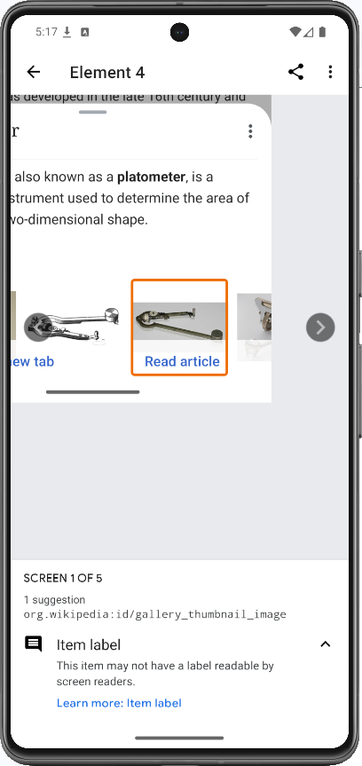
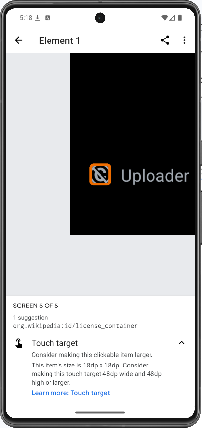
Imagen 15: Resultados de grabación de Accessibility Scanner
Nuevamente, el escáner resalta los elementos problemáticos y ofrece explicaciones y posibles soluciones. Todas las auditorías realizadas se almacenan localmente en el dispositivo y pueden consultarse directamente desde la aplicación Accessibility Scanner. Al realizar estas verificaciones, se recomienda ejecutar múltiples flujos representativos del comportamiento real de los usuarios y variar parámetros como el nivel de zoom, la orientación de la pantalla y otras condiciones de uso.
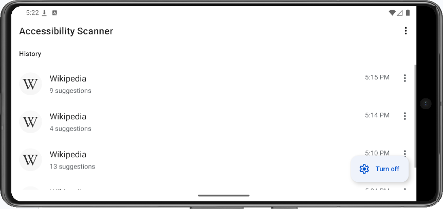
Imagen 16: Historial de Accessibility Scanner
Más recursos sobre accesibilidad
Hemos revisado cómo detectar problemas de accesibilidad, pero surge una pregunta fundamental: ¿cómo solucionarlos? Dependiendo del framework que se utilice, existen numerosos recursos que permiten integrar la accesibilidad desde las etapas iniciales del desarrollo. Estos recursos incluyen herramientas, documentación y componentes de software especializados. A continuación, se presenta una lista de referencias recomendadas:
- React: https://react-aria.adobe.com/, https://martijnhols.nl/blog/accessibility-essentials-every-front-end-developer-should-know
- Wordpress: https://deliciousbrains.com/using-aria-roles-for-accessibility-in-wordpress/
- Drupal: https://www.drupal.org/docs/getting-started/accessibility
- Angular: https://angular.dev/best-practices/a11y
- Svelte: https://svelte.dev/docs/kit/accessibility
Referencias
Version 1.0 - March 10, 2026
Juan Diego Yepes Parra | Autor |
Camilo Escobar Velasquez | Revisor |
Mario Linares Vasquez | Revisor |